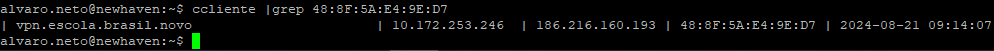
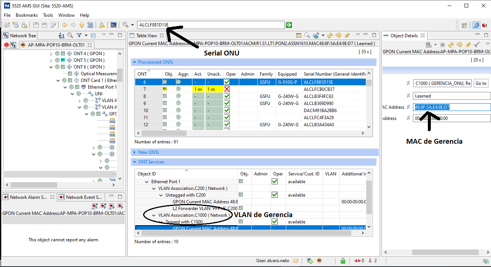
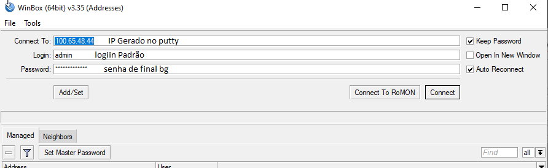
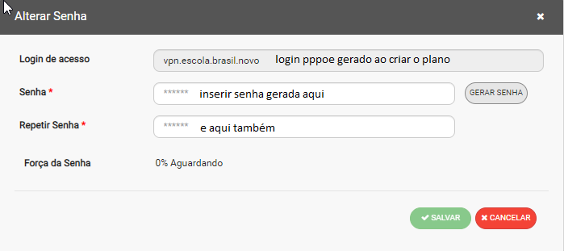
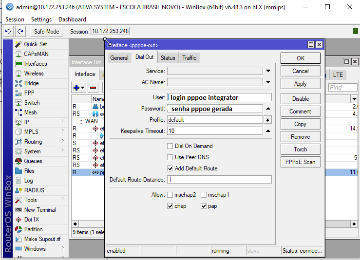
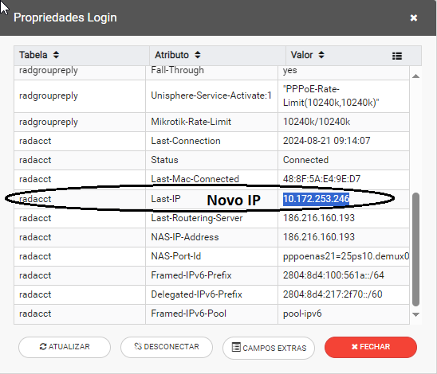
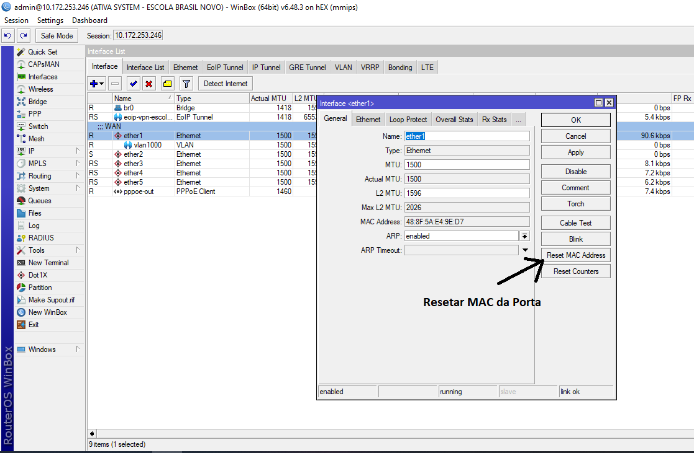
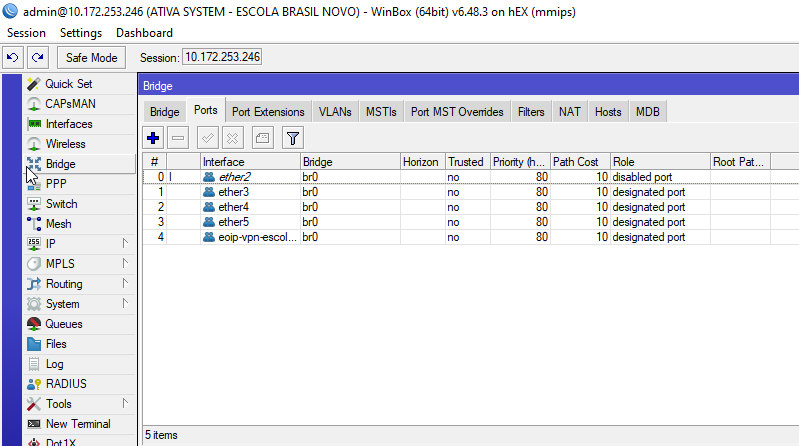
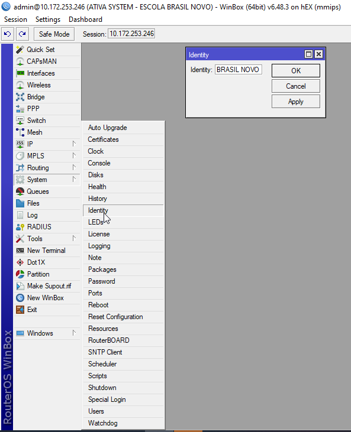
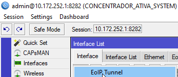

# Passo 1 - Obtendo Gerencia
- Abra o Putty e insira o comando:
ccliente |grep vocetelecomcabo ou mac de gerencia
- Inserir no Winbox o IP mais a esquerda da lista criada
- Caso não apareça nada, inserir o SERIAL via AMS e copiar o MAC de gerencia da vlan 1000. Qualquer erro como: MAC nao aparecer ou as Vlans estiverem inativas deve solicitar ao técnico verificar o fisico (sinal de fibra na onu, conexao do cabo da bridge na ether 1 da RB, etc)
- Winbox
A Senha padrão para novas RBs é a de final "bg"
# Passo 2 - Conectando o PPPoE
- Gerar Senha no Putty e inserir no campo abaixo: (Integrator Web)
copie ->
- cole a senha gerada acima no campo "Senha" do integrator web
- Copie o login PPPoE do plano a ser ativado e a mesma senha inserida no integrator(conforme imagem abaixo)
! OBS: EQUIPAMENTO IRÁ REINICIAR APÓS APLICAR ALTERAÇÃO NA RB !
- Pegar o novo IP de gerencia da RB em “Propriedades de Login -> Last Ip” no integrator
Passo 3 - Configurando a Bridge
- Resetar o mac de todas as portas (ETHERs 1 a 5) da RB conforme imagem (duplo clique nas porta correspondente):
! EQUIPAMENTO PODERÁ REINICIAR NOVAMENTE APÓS RESET DO MAC DA ETHER 1!
- Inserir o IP de gerencia: (caminho: IP > Address)
- Adress: 192.168.3.254/24
- Network: 192.168.3.0
- Interface: br0-lan
- Inserir o Eoip e portas 02 a 04 na Bridge br0-lan (caminho: Bridge > Ports)
# Passo 4 - Customizando a RB
- Nomeie a RB relacionando ao Plano do cliente Ex: RB_PLANO_01 (caminho: System > identity)
- Altere a senha para "7kwi387bgnk12"

AQUI ENCERRA A CONFIGURAÇÃO DA RB! Caso seja necessaria confiutração de Tunnel Eoip ou MPLS so processguir abaixo ou selecionando na Barra de navegaçãos
# Criando Tunnel EOIP
- Antes de tudo é necessario solicitar a liderança a criação do IP publico via Integrator WEB - Caminho(Clique direito no Plano > "Alterar Ponto de Acesso" > Digitar "Eoip" > selecionar "Tunel Eoip")
- Feito o passo acima, agora é necessario fixar o IP ao plano:
- Passos
- 1 - CLique direito no plano
- 2 - Selecione "Adicionar Serviço"
- 3 - Selecione "IP"
- 4 - CLique direito no Campo ip e "Editar Configuração"
- 5 - Clicar no botao de "3 pontos" na aba e salve
- Abra as propriedades de login e desconecte o PPPoE para regisrar o IP de gerencia
- ACESSE A RB e o Concentrador
- No Concentrador va na aba "Interface List" e adicione um novo tunnel eoip
 EoiP Tunnel" class="img">Campos
- NAME: "eoip-'nome relativo ao plano'"
- Remote Address: "IP de gerencia da FILIAl'"
- Tunnel ID: "Numero aleatorio"
Repetir o mesmo processo na Filial:
- NAME: "Nao é necessário alterar'
- Remote Address: "IP de gerencia do Concentrador"
- Tunnel ID: "Mesmo Numero inserido no Concentrador"
- REALIZAR TESTE DE COMUNICAÇÃO ENTRE OS PONTOS
- Pingar do concentrador pro IP da filial e ViceVersa
# MPLS - ABRIR GLPI P/ CRIAÇÂO DAS VLANS PELO CORE
DADOS NECESSARIOS:
- VLAN configurada na RB
- POP (concentrador e filial)
- Serial da BRIDGE (concentrador e filial)